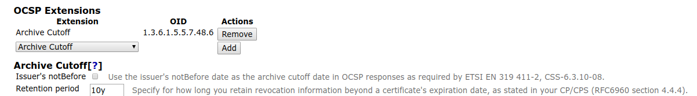

EJBCA 7.3 Release Notes
The PrimeKey EJBCA team is proud to announce the release of EJBCA 7.3.
With this release, EJBCA supports the standardized version of the ACME protocol. The release also brings a new tool for importing YAML exports from ConfigDump into EJBCA, as well as a new crypto token type for integrating with Azure Key Vault. Additionally, we have implemented CT log sharding based on arbitrary expiration periods and also improved the configuration of OCSP archive cutoff.
Highlights
ACME RFC Support
Up until now, EJBCA has supported IETF draft 12 of ACME. As of March 2019, IETF standardized the ACME protocol as RFC 8555. We are happy to announce that EJBCA now complies with the RFC standard. Having the standardized protocol supported will facilitate usage from an integration point of view as more ACME clients will work "out of the box" and the uncertainty whether the protocol will change again in the future is mitigated.
For a complete list of supported ACME operations and workflow examples, see the latest EJBCA ACME documentation.
ConfigDump Import
You may be familiar with our ConfigDump export tool, used for exporting the current state of your installation in a human-readable (YAML) format. The export tool is useful for auditing purposes and comparing configuration changes made in EJBCA.
The new ConfigDump import feature enables the reversed functionality, importing parts of or a complete configuration from an existing configuration dump.
EJBCA Configdump import CLI
The provided CLI tool allows you to target a configuration for import into EJBCA whether it contains a set of profiles, CAs, a complete configuration, or any other previously exported object. Since the configuration dump itself is human-readable, you can edit the fields in each object (for example, change the subject DN of an end entity profile) before import.
For more information on using the tool, see the ConfigDump documentation.
OCSP Archive Cutoff
The OCSP archive cutoff extension (RFC 6960 section 4.4.4.) was previously configured per EJBCA instance in ocsp.properties, by setting the property ocsp.expiredcert.retentionperiod to the retention period in seconds.
This setting is now configured per CA, by editing the corresponding OCSP key binding. This allows for different archive cutoff settings being used for different CAs. We have also added a setting to base the archive cutoff date on the issuer's notBefore date (instead of the retention period and the producedAt date of the OCSP response) as mandated by ETSI EN 319 411-2, CSS-6.3.10-08.

For more information, see Archive Cutoff and for important notes to be aware of when upgrading, see EJBCA 7.3 Upgrade Notes.
Certificate Transparency Sharding
It is now also possible to define a validity interval accepted by
Certificate Transparency (
CT) log servers. The new setting allows limiting the scope of acceptable certificates to a date range and is configured in the CA Web, under System Configuration > Certificate Transparency Logs, by editing an existing CT log.
For more information on Sharded CT logs, see Certificate Transparency.
Azure Key Vault Crypto Token
Microsoft Azure provides a cloud "Key Vault" for HSM storage of cryptographic keys. As of EJBCA 7.3, Azure Key Vault can be set up as a Crypto Token in EJBCA, leveraging the advantages of cloud-stored keys. For detailed information and configuration instructions, see the EJBCA Cloud Azure Key Vault Integration Guide.
Upgrade Information
Review the EJBCA 7.3 Upgrade Notes for important information about this release. For upgrade instructions and information on upgrade paths, see Upgrading EJBCA.
Change Log: Resolved Issues
For full details of fixed bugs and implemented features in EJBCA 7.3, refer to our JIRA Issue Tracker.
Resolved Issues in EJBCA 7.3.0
Released October 2019
New Features
ECA-7278 - Initial support for Azure Key Vault as EJBCA Crypto Token
ECA-8039 - Make OCSP Archive cutoff configurable in the CA UI, for all OCSP responses, and with (optional) static date (CA notBefore)
ECA-8236 - CA/Browser Forum Organization Identifier Field certificate extension (OID: 2.23.140.3.1) for PSD2 certificates
ECA-8371 - Add RA proxying to get global configurations
ECA-8372 - Get GlobalAcmeConfiguration over peer
ECA-8379 - EST support in Statedump
ECA-8390 - Convert caaIdentities URLs to IDN (ASCII) for ACME processing
ECA-8402 - Update SCEP GetCACaps return message to scep draft23
ECA-8403 - SCEP: set default hash algorithm to SHA-256 and support 3DES as response message encryption
ECA-8438 - Create Configdump EJB interface
ECA-8439 - Create configdump import CLI command
ECA-8440 - Add EJBCA version field to Configdump exports
ECA-8449 - Overwrite option for Configdump CLI: Replace/Update/Leave
ECA-8461 - Add the ability to view queued items in the CA web
ECA-8517 - Configdump import of Custom Certificate Extensions
ECA-8518 - Configdump import of Extended Key Usages
ECA-8519 - Configdump import of Internal Key Bindings
ECA-8520 - Configdump import of Publishers
ECA-8521 - Configdump import of Services
ECA-8522 - Configdump import of Certification Authorities
Tasks
ECA-7435 - Java 11: ClassNotFoundException: org.apache.geronimo.osgi.locator.ProviderLocator from WS Tests
ECA-8277 - clientToolBox uses the ext dir, which no longer exists in Java 11
ECA-8380 - ACME: QA Testing of ACME Changes
ECA-8405 - Documentation: Clarify CMP concurrent request to same user fails
ECA-8453 - Update some external dependencies
ECA-8454 - Update the last MySQL5Dialect to MySQL5InnoDBDialect in (old) external RA
ECA-8459 - Webtests: Add platform verification feature
ECA-8474 - Documentation: Add database driver and DataSource for PostgreSQL
ECA-8500 - QA Testing 7.3
ECA-8526 - System Test Investigation: EE_COS7_OpenJDK8_WF10_NOHSM_MSSQL2017
Improvements
ECA-7596 - Unification and consolidation of dockers' shell scripts
ECA-8073 - Include key information in ConfigDump
ECA-8247 - Allow CT logs to pick sharding by period
ECA-8273 - acme: Reduce code duplication
ECA-8329 - Clean up language files (Hard Token)
ECA-8330 - GUI: Rename all "Administrator Role" to "Role"
ECA-8335 - Update ACME authorization resources to RFC 8555 compliance
ECA-8336 - Update ACME 'revokeCert' resource to RFC 8555 compliance
ECA-8337 - Update ACME 'directory' resource to RFC 8555 compliance
ECA-8338 - Update ACME certificate resources to RFC 8555 compliance
ECA-8339 - Update ACME 'newAccount' resource to RFC 8555 compliance
ECA-8340 - Update ACME account resources to RFC 8555 compliance
ECA-8341 - Update ACME order resources to RFC 8555 compliance
ECA-8342 - Update ACME 'keyChange' resource to RFC 8555 compliance
ECA-8346 - Include references to the sql scripts available in the documentation.
ECA-8347 - Update ACME 'newNonce' resource to RFC 8555 compliance
ECA-8350 - Implement 'revokeCert' resource authorization for an ACME account holding all of the identifiers in the certificate
ECA-8356 - Exceptions caught by the EST servlet are not logged properly
ECA-8370 - Update ACME challenge response resource to RFC 8555 compliance
ECA-8397 - Update ACME documentation to RFC 8555 compliance
ECA-8399 - Remove ACME 'challenge' GET resource
ECA-8401 - Display a fingerprint of the imported Statedump after it has been imported in the CA web
ECA-8406 - Give a proper error message when using an attributes file for Client Toolbox in EJBCA
ECA-8409 - Select the correct attribútes file when editing a crypto token
ECA-8413 - Include the configured OCSP archive cutoff extension in all OCSP responses, not only for expired certs
ECA-8422 - Add CLI functionality for listing and editing OCSP extensions
ECA-8441 - Add import to ConfigdumpCore
ECA-8442 - Add YamlReader class
ECA-8443 - Add PoC for import of one object type in ConfigdumpSessionBean
ECA-8444 - Add import of important objects types in ConfigdumpSessionBean
ECA-8445 - Add import in configdump dump handlers
ECA-8446 - Create functional test (system test) for configdump import
ECA-8447 - CLI test for Configdump
ECA-8466 - ACME test suite re-factorings
ECA-8468 - Only report when available upstream RA peers changes
ECA-8475 - ACME end point test coverage
ECA-8477 - Add import of End Entity Profiles in Configdump
ECA-8478 - Configdump import of roles
ECA-8481 - Add implementation version in jar files to CAA cli tool, and other tools
ECA-8482 - Fix call of ACME operations with explicit ACME alias
ECA-8490 - Configdump import of Certificate Profiles
ECA-8502 - Create test for CaImportMsCaCertificates (import dump file created by certutil)
ECA-8513 - Sort items in list boxes on the role_edit.xhtml page in alphabetic order
ECA-8523 - Print CRL and public key when CRL fails to verify
ECA-8525 - Test of configdump import of Publishers
ECA-8527 - Option to export defaults in Configdump
ECA-8528 - Configdump documentation
ECA-8529 - AzureCryptoToken: Fix missing html ID and log if password is empty
ECA-8537 - Test of Configdump import of Internal Key Bindings
ECA-8543 - Exclude configdump import from ziprelease
Bug Fixes
ECA-7320 - CN from CSR not loaded correctly when "Changing a CSR"
ECA-7486 - EEP default Token type selection doesn't work on RaWeb enrollmakenewrequest page
ECA-7739 - Using a certificate profile template does not select the correct fields
ECA-7849 - Regression: foot_banner not used
ECA-7947 - Unused access rules are saved in basic mode
ECA-8033 - For configdump, allow it to skip past CAs waiting for a response and complete.
ECA-8099 - CA created with "Signed By External CA" has Serial Number Octet Size -1
ECA-8232 - IPv6 RFC compliant HREF links in EJBCA
ECA-8307 - CryptoTokenData: P11CryptoToken row entry touched/updated without need
ECA-8319 - "clientToolBox PKCS11HSMKeyTool linkcert" command should work according to ICAO 9303
ECA-8320 - SCP Publisher uses managing admin to sign payload
ECA-8322 - CertificateCrlReader does not handle revocation publications correctly
ECA-8323 - Fix findbugs warnings
ECA-8325 - CMP Configuration UI issues
ECA-8326 - CryptoToken.getPublicKey return javadoc differs from implementation
ECA-8344 - Jenkins job EE_COS7_OpenJDK8_WF10_NOHSM_DB2 cannot find DB2 Express-C docker image
ECA-8345 - Jenkins failing test 'org.ejbca.core.model.services.worker.CertificateCrlReaderSystemTest.testReadCertificateFromDisk'
ECA-8354 - First column not displayed when running the script language-tool.sh -s
ECA-8360 - Generated CRL Distribution Point and Issuer do not show correct DN
ECA-8375 - Regression: Failing Selenium test EcaQa206_CRLPartitionsIncorrectSettings
ECA-8383 - Reference lib.jpa.classpath not found when building cmpProxy for Tomcat.
ECA-8391 - New EST alias fields missing from ConfigDump export
ECA-8407 - User is asked to confirm slot re-use when editing an existing PKCS#11 crypto token
ECA-8410 - Set EJBCA_HOME in ejbca.sh if not set already
ECA-8411 - CRL is stored in publisher queue even if direct publishing is successful
ECA-8412 - PublishQueueProcessWorker always reports a NO_ACTION ServiceExecutionResult
ECA-8419 - Jenkins failing test 'org.ejbca.core.ejb.ProfilingTest.retrieveStats'
ECA-8420 - Jenkins failing test 'org.ejbca.core.ejb.upgrade.UpgradeSessionBeanTest.testUpgradeOcspExtensions6120'
ECA-8423 - Update Muehlbauer WS for removed Hardtoken
ECA-8426 - Trim CT log URLs
ECA-8428 - EST Name Generation USERNAME option gives error message when client username not set
ECA-8433 - Add placeholder to ejbca resourses CMP error message
ECA-8434 - OCSP Extensions are temporarily saved, even when the Save button is not clicked
ECA-8435 - Some CA lists in RA Web is sorted case sensitive
ECA-8436 - Caching issue with PSD2 fields in RA-web
ECA-8457 - Database protection broken on existing installations
ECA-8464 - EST configuration in Admin UI is not cleared when navigating away from the page
ECA-8465 - MSSQL Jenkins job (DB collation has to support case sensitivity)
ECA-8470 - Regression: GUI doesn't render "</br>" correctly for view certificate screen
ECA-8479 - Crypto token manage page checks for wrong permission
ECA-8484 - RA enrollment returns older certificate when validation fails
ECA-8485 - Legacy External RA not working with Wildfly 14 because of problem with the hibernate provider.
ECA-8486 - NPE when you click on 'Export selected' without selecting anything on Manage End Entity Profile page
ECA-8488 - L10n: Typo in English language
ECA-8492 - Importing Microsoft CA fails using ejbca.sh
ECA-8504 - Inconsistency when creating roles in CA web and RA web
ECA-8506 - Add missing textfield id for textfieldsharedcmprasecret
ECA-8509 - Regression: EJBCA Ignores CryptoToken Selection While Creating CA When Using the Default Key Option for the CertSignKey
ECA-8514 - RA Web incorrectly claims that role has members
ECA-8515 - Peer connector missing permissions when Approval management is set
ECA-8532 - Allow subject DN override and allow extension override is not honoured in the REST API
ECA-8538 - Regression: exception clicking on "Clear caches" button
ECA-8540 - Configdump error when exporting new unmodified ACME alias
ECA-8541 - Missing setters and unhandled nulls cause errors in Configdump
ECA-8542 - Fix configdump warning when importing certain End Entity Profiles
Resolved Issues in EJBCA 7.3.0.1
Released 30 October 2019
New Features
ECA-8530 - Add CLI support for EST config enhancements
ECA-8554 - Configdump import of EST Configuration
ECA-8606 - EJB CLI command for controlling enabled protocols
Tasks
ECA-8582 - Resolve circular dependency between Certification Authority and Certificate Profile
ECA-8583 - Detect early on if export versions are compatible with current software version
ECA-8602 - Review and update configdump documentation as needed
ECA-8637 - Security: Upgrade external dependency
ECA-8650 - Security: Upgrade external dependency
Improvements
ECA-8396 - System test for P11NG
ECA-8572 - Prevent NPE in PeerPublisher if Peer Connector does not exist
ECA-8574 - Profile edit notification
ECA-8580 - Option to disable adding of new nodes to GlobalConfiguration
ECA-8584 - Detect and prompt for all passwords that will be used during import
ECA-8585 - Add link to Apple CT log list to admin GUI, in addition to Googles
ECA-8586 - Improve documentation for Managing CAs
ECA-8589 - CA Life Cycle JSF rendering conditions are wrong
ECA-8591 - Do not print stack trace in CLI when application server is not running
ECA-8593 - Add more detailed error message to clientToolBox certreq command when csr can not be read or directory is invalid
ECA-8600 - Check ConfigDump for unused/unimplemented code
ECA-8601 - Normalize configdump/src-cli
ECA-8604 - Refactor ConfigDumpImportItem and BaseCrud
ECA-8609 - Remove replace option in Configdump
ECA-8611 - Improve configdump error handling
ECA-8612 - Auto-resolve configdump references after import
ECA-8613 - ConfigdumpException should result in rollback
ECA-8614 - Configdump flag to control non-interactive behavior
ECA-8626 - Update PMD scan pipeline to use warnings-ng plugin syntax
ECA-8642 - Improve detection of current software version for Configdump Import
ECA-8646 - Change session timeouts to 15 minutes for PCI DSS compliance
Bug Fixes
ECA-8544 - P11 slot is already used warning displayed incorrectly
ECA-8553 - Importing CA hierarchies in Configdump not always working
ECA-8578 - REST API certificate search for active certificates do not include certificates notified about expiration
ECA-8595 - ant clean does not clean ra-gui or batchenrollment-gui modules
ECA-8596 - Delta CRL is not generated correctly when a certificate is released from hold
ECA-8597 - Link to delta CRL in CA web fetches base CRL instead
ECA-8605 - EJBCA 7.3.0 and ACME with cleartextpassword
ECA-8617 - Exclude tests for org.cesecore.keys.token.p11ng from non-eidas release
ECA-8620 - Default OCSP responder always sends "Unknown" for non-existing CA, regardless of settings
ECA-8623 - Use correct port override in EST alias systemtest
ECA-8624 - Disabling node tracking prevents local clear cache
ECA-8625 - p11ng cache not cleared on token reactivation
ECA-8641 - Improve configdump error message when write access is denied
ECA-8647 - Fix configdump import of Certificate Policy in Certificate Profile
ECA-8655 - Ordering of role members varies in Configdump exports
ECA-8661 - ACME newOrder fails due to lack of access to EEP or other failed assumption
ECA-8662 - problem importing Scep configuration with configdump
ECA-8663 - ConfigDump Import: PKCS12 key store mac invalid